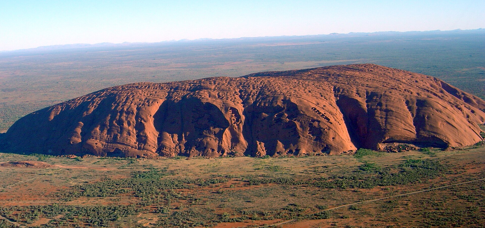
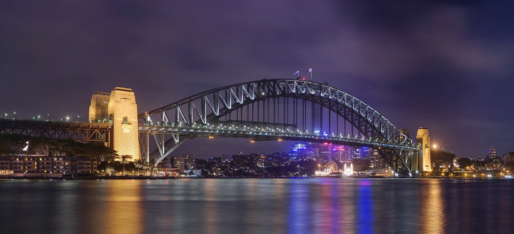
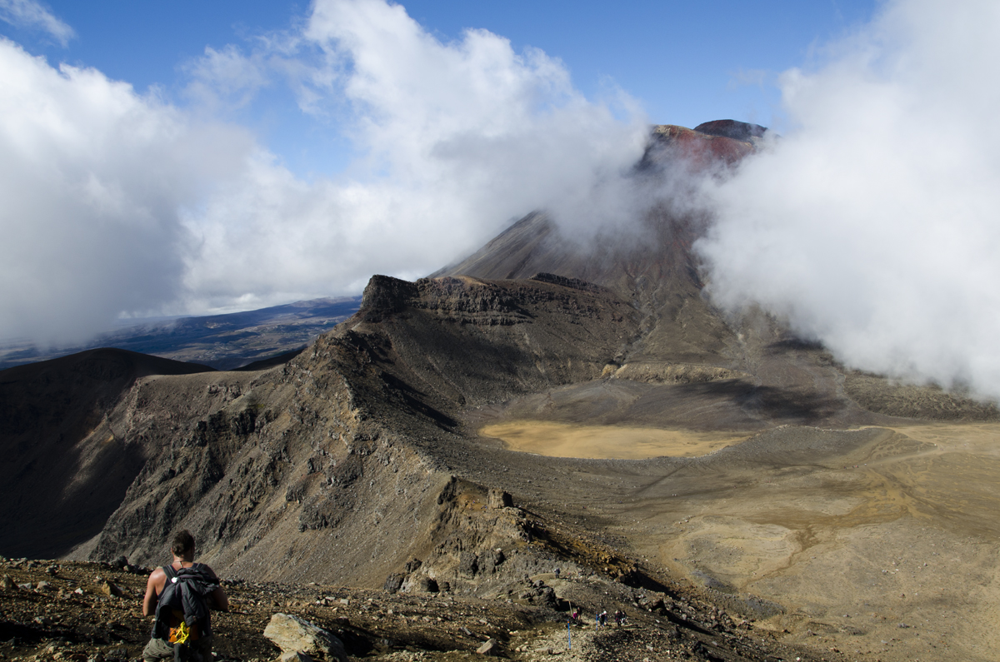
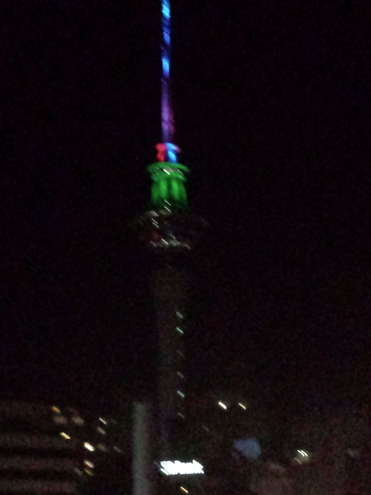
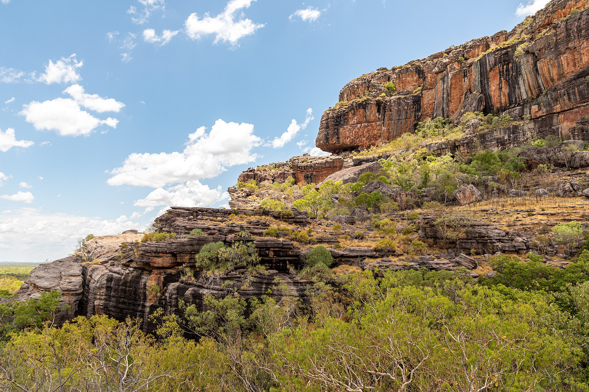

Überblick
Wahrzeichen in Australien und Ozeanien reichen von Korallenriffen und Sandsteinmonolithen bis zu Opernhäusern, Hänge- und Bogenbrücken sowie vulkanischen Kulturlandschaften. In der physischen Geografie umfasst die Region den Kontinent Australien, Neuseeland, Melanesien, Mikronesien und Polynesien – eine riesige maritime Welt mit wenigen großen Landmassen und Tausenden Inseln. Ikonen entstehen hier besonders stark aus dem Zusammenspiel indigener Sinnsysteme, kolonialer Stadtgründung und Naturschutz.
Die sieben Beispiele dieses Artikels sind: Sydney Opera House, Uluru, Great Barrier Reef, Harbour Bridge, Tongariro-Nationalpark, Sky Tower Auckland und Kakadu-Nationalpark. Sie verbinden Metropolen an der australischen Ostküste mit dem Roten Zentrum, dem tropischen Norden, dem größten Korallenriffsystem der Erde und neuseeländischen Vulkan- und Stadtsymbolen. Die Auswahl folgt verbreiteter Ikonografie; Fiji, Hawaiʻi, Papua-Neuguinea oder Samoa böten weitere, gleichermaßen berechtigte Motive. Auch Bora Bora, der Milford Sound oder die Vulkanlandschaften Hawaiʻis gehören zum weiteren Ikonenvorrat; hier liegt der Fokus auf sieben besonders häufig zitierten australisch-neuseeländischen Beispielen, ohne den Rest Ozeaniens abzuwerten. Die Reihenfolge folgt der Aufgabenliste, nicht einer Rangfolge.
Besonders sorgfältig sind heilige Orte der First Peoples zu behandeln. Uluru und die Felskunst in Kakadu gehören zu lebendigen Kulturen; Besuch und Beschreibung sollen kulturelle Bedeutung und Regeln respektieren, ohne geheimes Wissen auszubreiten. In Aotearoa/Neuseeland verbindet Tongariro vulkanische Natur mit Māori-Bedeutung und war ein frühes UNESCO-Beispiel für Kulturlandschaft. Quantitative Angaben bleiben an Parks Australia, DOC, UNESCO und gängige Nachschlagewerke gebunden. Der Artikel skizziert Lage, Geschichte und geografische Rolle und vermeidet erfundene Präzisionszahlen.
Ozeanien ist kein einheitlicher Kulturraum: australische First Peoples, Māori, melanesische, mikronesische und polynesische Gesellschaften haben eigene Landschaftsbezüge. Koloniale Städte wie Sydney und Auckland erzeugen europäisch geprägte Skyline-Ikonen; zugleich bleiben Country, whenua und moana zentrale Bezugssysteme. Wahrzeichenartikel müssen diese Mehrschichtigkeit benennen, ohne alles auf Tourismusmotto zu reduzieren. Physisch spannen die Beispiele vom ariden Zentrum und den Monsunnorden Australiens bis zu Korallenriffen und der vulkanischen Nordinsel Neuseelands – eine Bandbreite, die den Begriff „Ozeanien“ geografisch ernst nimmt. Zwischen Outback, Riff und Vulkanzone entstehen so unterschiedliche „erste Bilder“ derselben Großregion – verbunden durch koloniale Wege, Flugtouren und digitale Bilderwelten.
Die Wahrzeichen
Sydney Opera House
Das Sydney Opera House am Bennelong Point im Sydney Harbour ist eines der bekanntesten Bauwerke des 20. Jahrhunderts. Der dänische Architekt Jørn Utzon gewann 1957 den internationalen Wettbewerb; nach schwieriger Bauzeit und Konflikten um Kosten und Ausführung wurde das Haus 1973 eröffnet. Die charakteristischen Schalen erinnert an Segel oder Muscheln und sitzen auf einer Plattform über dem Wasser, gegenüber der Harbour Bridge. 2007 wurde das Opera House UNESCO-Weltkulturerbe.
Geografisch markiert es die Verdichtung Sydneys an einer der großen Naturhäfen der Welt: steile Ufer, Buchten und eine koloniale Gründung auf Land der Gadigal und anderer Eora-Gruppen. Das Gebäude ist zugleich Konzerthaus, Tourismusmagnet und nationale Marke Australiens. Utzons Konstruktion verband vorgefertigte Betonschalen mit komplexer Geometrie; spätere Sanierungen und Akustikverbesserungen halten den Betrieb modern. Als Wahrzeichen steht das Opera House für kulturelle Ambition einer jungen Nation und für die Verschränkung von Architekturikone und Hafenlandschaft – ein Gegenstück zu rein „natürlichen“ Symbolen des Kontinents. Aufführungen, Führungen und der öffentliche Vorplatz machen den Ort zum alltäglichen Stadtraum, nicht nur zur Fernansicht. In der Wahrzeichen-Geografie Ozeaniens verkörpert das Opera House die pazifische Metropole als Bühne globaler Moderne.
Uluru

Uluru (auch Ayers Rock) ist ein monumental aufragender Sandstein-Inselberg im Zentrum Australiens, im Northern Territory. Er erhebt sich etwa 348 Meter über die umgebende Ebene; der Umfang der Basis beträgt rund 9,4 Kilometer. Zusammen mit Kata Tjuṯa bildet er den Kern des Uluṟu-Kata Tjuṯa-Nationalparks, UNESCO-Weltkulturerbe und gemeinsam von Aṉangu (Traditional Owners) und Parks Australia verwaltet. Für Aṉangu ist Uluru heiliger Ort im Rahmen von Tjukurpa (Gesetz, Geschichten, Verantwortung für Country).
Europäische Sichtungen datieren ins 19. Jahrhundert (u. a. William Gosse 1873); der koloniale Name Ayers Rock wich offiziell zunehmend dem Namen Uluru. 1985 wurden die Titel an Aṉangu zurückgegeben und das Land an die australische Regierung verpachtet – Grundlage der gemeinsamen Verwaltung. Das Besteigen von Uluru wurde am 26. Oktober 2019 dauerhaft untersagt, aus Respekt vor kultureller Bedeutung und aus Sicherheitsgründen. Besuchern werden Wege um die Basis, Kulturzentren und klare Regeln zu Fotografie und sensiblen Bereichen empfohlen. Enzyklopädisch ist Uluru kein bloßes „Foto-Motiv“, sondern lebendige Kulturlandschaft: Geografie, Spiritualität und Schutzregime gehören zusammen. Kata Tjuṯa ergänzt Uluru als zweites großes Formationsensemble; beide gehören zu derselben Kulturlandschaft und denselben Verwaltungsregeln. Wer Uluru besucht, wird angehalten, auf markierten Wegen zu bleiben, sensible Stätten zu achten und Aṉangu-Führungen als primäre Deutungsquelle zu verstehen.
Great Barrier Reef

Das Great Barrier Reef vor der Nordostküste Queenslands ist das größte Korallenriffsystem der Erde. Es umfasst Tausende Riffe und Hunderte Inseln entlang des Schelfs und steht seit 1981 auf der UNESCO-Welterbeliste. Korallen, Seegraswiesen, Mangroven und eine außergewöhnliche Artenvielfalt prägen das Ökosystem; indigene Meeresvölker der Region haben langjährige Verbindungen zu See und Riff.
Geografisch entsteht das System aus dem Zusammenspiel von Schelfmeer, Wassertemperatur, Licht und biogener Kalkproduktion. Tourismus (Schnorcheln, Tauchen, Inselaufenthalte) ist Wirtschaftsfaktor und Belastungsquelle. Seit Jahrzehnten dokumentieren Forschende Korallenbleiche im Zusammenhang mit Meereserwärmung, dazu kommen Wasserqualität aus dem Hinterland, Dornenkronenseesterne und lokale Nutzung. Der Artikel vermeidet erfundene Prozentangaben zu „abgestorbenen“ Flächen; klar ist: Das Riff ist ein hochdynamisches, klimasensibles System und ein zentrales Wahrzeichen Australiens – zugleich Naturwunder und Warnsignal. Schutzpolitik, Wissenschaft und indigene Mitverwaltung bleiben entscheidend. Das Marine Park Authority-Regime und Welterbe-Status erzeugen internationale Aufmerksamkeit; lokale Küsten- und Inselgemeinden tragen die alltägliche Balance aus Nutzung und Schonung. Als Wahrzeichen ist das Riff damit doppeldeutig: Stolz Australiens und Prüfstein globaler Ozeanpolitik. Schiffe, Forschungsstationen und indigene Sea Country-Perspektiven teilen sich denselben Schelfraum. Das Riff bleibt damit zentrales Naturwahrzeichen Australiens – und ein globales Lehrstück mariner Geografie.
Harbour Bridge

Die Sydney Harbour Bridge ist eine stählerne Bogenbrücke über den Port Jackson und verbindet die Sydneyser Innenstadt mit der Nordseite. Sie wurde 1932 eröffnet und gilt als eine der größten Stahlbogenbrücken ihrer Art. Zusammen mit dem Opera House bildet sie das klassische Postkartenpaar des Hafens: Bogen und Schalen spiegeln sich im Wasser und prägen die Skyline.
Der Bau fiel in die Zeit der Weltwirtschaftskrise und wurde zum Symbol von Arbeit, Ingenieurskunst und Stadtwachstum. Fußwege, Bahn und Straßen nutzen die Brücke bis heute; „BridgeClimb“-Touren haben den Bogen zusätzlich touristisch erschlossen. Geografisch macht die Brücke die Enge und Tiefe des Hafens erfahrbar und knüpft an koloniale Hafenwirtschaft an, die auf Gadigal-Land errichtet wurde. Als Wahrzeichen steht sie für alltägliche Infrastruktur ebenso wie für nationale Feiern (Feuerwerk, Silvester). Im Vergleich zur Golden Gate Bridge ist sie Bogen- statt Hängekonstruktion, funktional aber ähnlich: ein Verkehrsbauwerk, das zur Landschaftsmetapher wurde. Technisch verbindet sie massive Granitpfeiler und einen weiten Stahlbogen; historisch steht sie für die Durchsetzung Sydneys als Hafen- und Industriemetropole des 20. Jahrhunderts. Zusammen mit dem Opera House definiert sie den „Blick auf den Harbour“, der Australien in der Weltbildsprache oft ersetzt. Für die geografische Lesart zählt vor allem die Lage: eine enge Hafenpassage, die koloniale und heutige Verkehrsströme bündelt und die Stadt in Nord und Süd teilt.
Tongariro-Nationalpark

Der Tongariro-Nationalpark auf der Nordinsel Aotearoa/Neuseelands ist der älteste Nationalpark des Landes (eingerichtet 1887 nach Schenkung der Gipfelregion durch Māori-Führer Te Heuheu Tūkino IV an die Krone zum Schutz der heiligen Berge). Dominante Vulkane sind Tongariro, Ngauruhoe und Ruapehu; Kraterseen, Lavafelder und alpine Vegetation prägen die Landschaft. UNESCO listet den Park als duales Weltnatur- und -kulturerbe; 1993 wurde er als frühe Kulturlandschaft anerkannt – Ausdruck der Bedeutung für Ngāti Tūwharetoa und weitere iwi.
Der Tongariro Alpine Crossing gehört zu den bekanntesten Tageswanderungen der Welt; vulkanische Aktivität, Wetterumschwünge und Überfüllung erfordern Management und Respektregeln. Für Māori sind die Berge Vorfahren und tapu (heilig); touristische Nutzung muss kulturelle Protokolle beachten. Geografisch liegt der Park in der Taupō-Vulkanzone, einer aktiven Riftregion. Als Wahrzeichen Ozeaniens verbindet Tongariro Feuer, Eisreste, alpine Ökologie und indigene Landschaftsbeziehung – ein Gegenmodell zu rein „leeren“ Naturpark-Idealen. Ruapehu trägt Skigebiete und bleibt zugleich aktiver Vulkan; Ngauruhoe wurde durch Filmkulissen global bekannt, ohne dass dies die sakrale Bedeutung aufhebt. Parkverwaltung und iwi arbeiten an Interpretationskonzepten, die Tourismus und Tikanga (richtige Handlungsweise) in Einklang bringen sollen. Damit ist Tongariro Vorbild für duale Welterbe-Logik in Ozeanien.
Sky Tower Auckland

Der Sky Tower in Auckland ist mit 328 Metern Höhe ein weithin sichtbarer Fernmelde- und Aussichtsturm und wurde 1997 eröffnet. Er überragt die Innenstadt am Waitematā Harbour und dient Funk-, Tourismus- und Eventzwecken; Glasböden und Aussichtsplattformen ziehen Besuchende an. In einer Stadtregion, die über einen Isthmus zwischen zwei Hafenbecken wächst, markiert der Turm die Verdichtung des CBD.
Geografisch steht Auckland für Polynesiens größte Stadt und für die Überlagerung von Māori-Geschichte (Tāmaki Makaurau), pazifischer Migration und anglofoner Kolonialgründung. Der Sky Tower ist kein „heiliger Berg“, sondern ein Symbol urbaner Moderne – vergleichbar dem CN Tower in Toronto, jedoch in ozeanischem Kontext: Vulkankegel (etwa Rangitoto), Inseln des Hauraki Gulf und Vorortfächer rahmen die Silhouette. Als Wahrzeichen Neuseelands konkurriert er mit natürlichen Ikonen (Fjorden, Alpen); er zeigt, dass Ozeanien auch Metropolsymbole kennt. Bei klarem Wetter reicht der Blick über Hafen, Vororte und Vulkaninseln; bei Sturm wird die exponierte Lage der Stadtregion spürbar. Als Wahrzeichen ergänzt der Sky Tower die natürlichen Ikonen Neuseelands um eine Skyline-Marke im polynesischen Südpazifik. Erdbebenertüchtigung und Turmwahrnehmung gehören in Neuseeland zum Alltag von Hochhausplanung; der Sky Tower ist Teil dieser urbanen Risikogeografie.
Kakadu-Nationalpark

Der Kakadu-Nationalpark im tropischen Norden des Northern Territory ist eines der größten Nationalparkgebiete Australiens und UNESCO-Weltkulturerbe für Natur und Kultur. Flussauen, Fluttäler, Sandstein-Escarpments und Savannen beherbergen enorme Biodiversität; zugleich bewahrt Kakadu eine der bedeutendsten Konzentrationen Aboriginal rock art – Malereien und Gravuren, die über sehr lange Zeiträume hinweg Menschen, Tiere, Ahnenwesen und Alltagszenen zeigen. Traditional Owners (Bininj/Mungguy) verwalten den Park gemeinsam mit Parks Australia.
Felskunststätten wie Ubirr und Nourlangie (Burrungkuy) sind für Besuchende zugänglich, unterliegen aber Regeln: Wege bleiben auf markierten Pfaden, Fotografie sensibler Motive kann eingeschränkt sein, und Führungen erklären Bedeutung auf angemessenem Niveau, ohne geheimes Wissen preiszugeben. Geografisch liegt Kakadu im Übergang von Arnhem Land zur Küste; Gezeitenflüsse und Monsun prägen den Jahresgang. Als Wahrzeichen steht Kakadu für lebendige indigene Kultur im tropischen Norden – nicht nur für Krokodile und Sonnenuntergänge –, und mahnt, Felskunst als kulturelles Erbe und nicht als „primitiv“ zu lesen. Motive reichen von X-Ray-Tieren bis zu Kontaktzeit-Darstellungen; sie dokumentieren Wandel ebenso wie Kontinuität. Bergbauinteressen am Rand des Parks und Tourismusdruck im Inneren bleiben politische Spannungsfelder – typisch für Ressourcenräume Nordaustraliens. Kakadu schließt die Liste als Kultur- und Naturerbe des tropischen Nordens.
Quellen
- Sydney Opera House – Interesting facts / building history: https://www.sydneyoperahouse.com/building/interesting-facts-about-sydney-opera-house
- Australian Government DCCEEW – Sydney Opera House National Heritage: https://www.dcceew.gov.au/parks-heritage/heritage/places/national/sydney-opera-house
- UNESCO World Heritage Centre – Sydney Opera House: https://whc.unesco.org/en/list/166/
- Parks Australia – Uluṟu amazing facts: https://uluru.gov.au/discover/highlights/amazing-facts/
- Parks Australia – Uluṟu climb closure: https://uluru.gov.au/discover/history/uluru-climb-closure/
- UNESCO World Heritage Centre – Uluru-Kata Tjuta National Park: https://whc.unesco.org/en/list/447/
- UNESCO World Heritage Centre – Great Barrier Reef: https://whc.unesco.org/en/list/154/
- Encyclopaedia Britannica – „Great Barrier Reef“: https://www.britannica.com/place/Great-Barrier-Reef
- Encyclopaedia Britannica – „Sydney Harbour Bridge“: https://www.britannica.com/topic/Sydney-Harbour-Bridge
- UNESCO World Heritage Centre – Tongariro National Park: https://whc.unesco.org/en/list/421/
- New Zealand Department of Conservation – Tongariro World Heritage: https://www.doc.govt.nz/parks-and-recreation/places-to-go/central-north-island/places/tongariro-national-park/about-tongariro-national-park/world-heritage-site/
- Encyclopaedia Britannica – „Sky Tower“ (Auckland): https://www.britannica.com/topic/Sky-Tower
- UNESCO World Heritage Centre – Kakadu National Park: https://whc.unesco.org/en/list/147/
- Parks Australia – Kakadu National Park: https://kakadu.gov.au/
- Encyclopaedia Britannica – „Oceania“ / Australia context: https://www.britannica.com/place/Oceania-continent